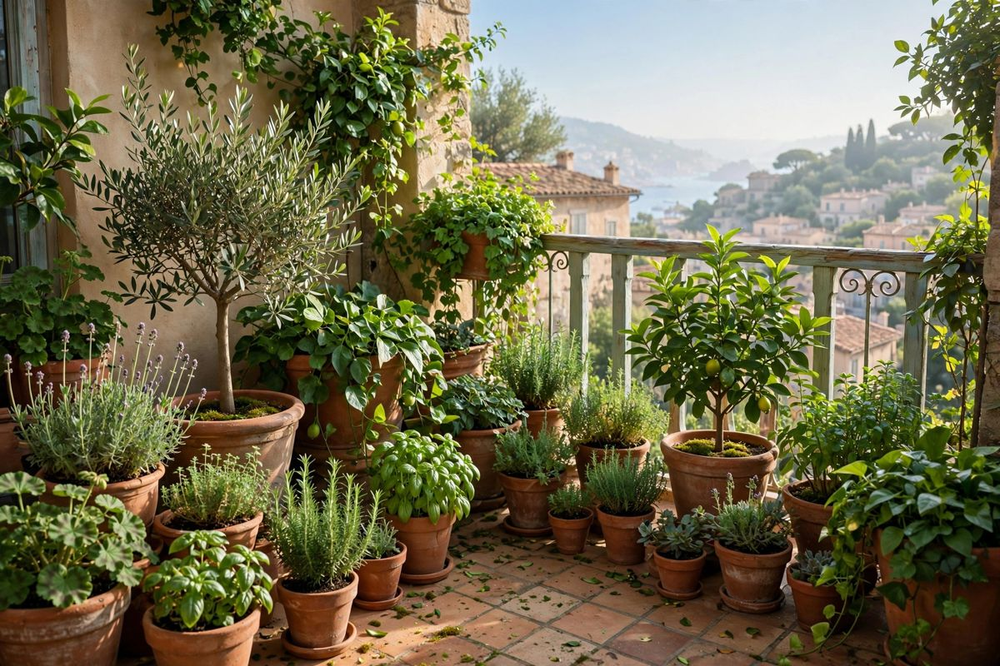
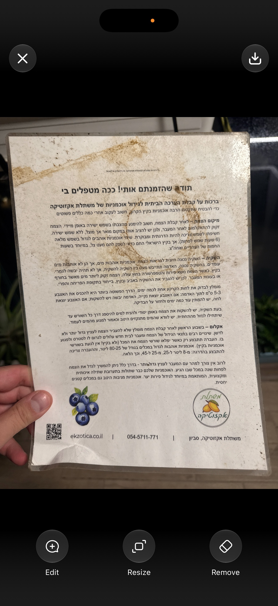
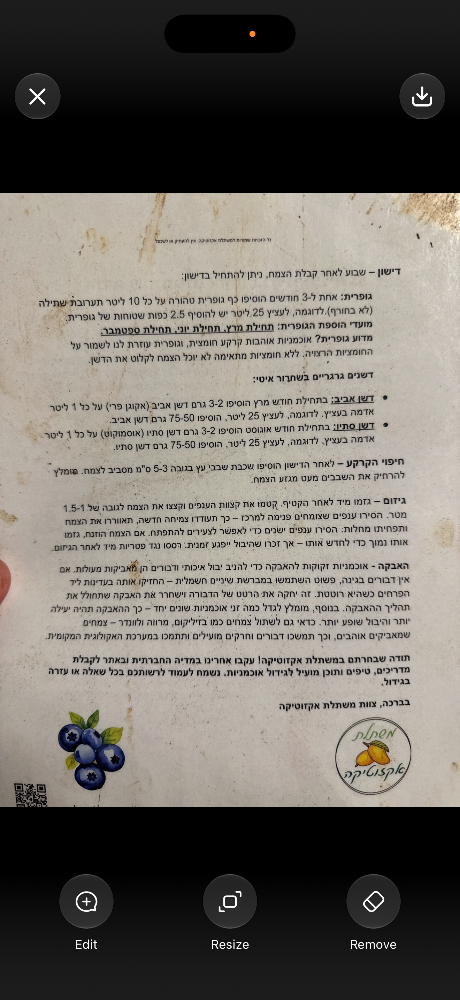

הגינה שלי
צמחים פופולריים השראה לגינה שלך
לטיפול היום
השקיה אוטומטית קרובה
הצמחים שלי
הצמחים שלי
מערכת השקיה
בקר השקיה חי
לא נטען עדיין — התחבר עם גוגל בהגדרות ואז לחץ "רענן סטטוס".
מתזמן השקיה אוטומטי
הלוזים כאן מחליפים את הלוזים המקומיים בבקר — חובה לכבות אותם בסמארט לייף (הבקר ← Schedule ← כבה כל לוז) כדי למנוע השקיה כפולה.
המערכת שלי
כאן מתעדים את תוכנית ההשקיה. הסטטוס החי והשליטה בבקר נמצאים בכרטיס "בקר השקיה חי" למעלה — דורש התחברות עם גוגל.
אזורי השקיה
דשנים וחומרים
מאגר הדשנים שלי
כל החומרים שברשותך, עם מינונים והוראות ערבוב.
מדריך גידול אוכמניות 🫐
ממשתלת אקזוטיקה — הוראות מלאות לטיפול.
גופרית: 2.5 כפות לעציץ 25 ליטר, כל 3–4 חודשים (תחילת מרץ, יוני, ספטמבר — לא בחורף). דשן אביב גרגירי: 50–75 גרם לעציץ 25 ליטר, בתחילת מרץ. דשן סתיו גרגירי: 50–75 גרם לעציץ 25 ליטר, בתחילת אוגוסט. אחרי דישון: חיפוי 3–5 ס"מ שבבי אורן מסביב (לא צמוד לגזע).
להשקות עד נגירה מחורי הניקוז. לתת לאדמה להתייבש מעט בין השקיות — לבדוק 3–5 ס"מ עומק עם האצבע. בקיץ ובפריחה להשקות יותר.
מיד אחרי הקטיף: לקטום קצות ענפים ולעצב לגובה 1–1.5 מטר. להסיר ענפים צומחים פנימה וענפים בני שנתיים.
עם זן שני ליד היבול גדל משמעותית. בלי דבורים — להאביק ידנית עם מכחול כשהפרחים פתוחים.


הגדרות
התראות
קבל תזכורת כשהטיפולים של היום מחכים — גם כשהאפליקציה סגורה.
זיהוי צמחים מצילום
הזיהוי עובד דרך שירות פלנטנט. מדביקים כאן מפתח אישי פעם אחת, והוא נשמר רק בטלפון הזה.
אין לך מפתח? נרשמים בחינם ומקבלים אחד אישי כאן: הרשמה לפלנטנט
גיבוי ושחזור
כל הצמחים, הטיפולים ותוכנית ההשקיה נשמרים בדפדפן של הטלפון הזה בלבד. מומלץ לייצא גיבוי מדי פעם — אם מחליפים טלפון או מנקים נתוני דפדפן, אפשר לשחזר הכול מהקובץ.
סנכרון ענן
סנכרון אוטומטי של הצמחים, הטיפולים ותוכנית ההשקיה לענן — הנתונים זמינים בכל מכשיר עם אותו חשבון גוגל, ומגובים אוטומטית.